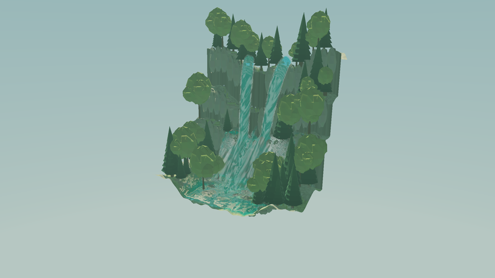
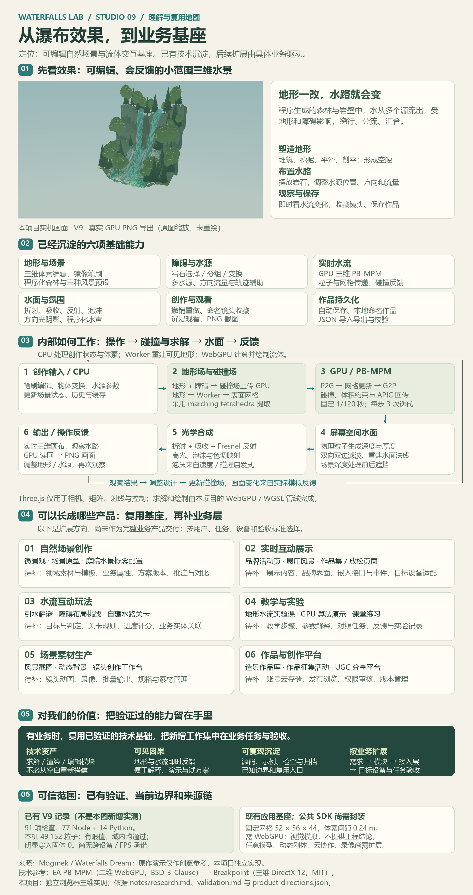
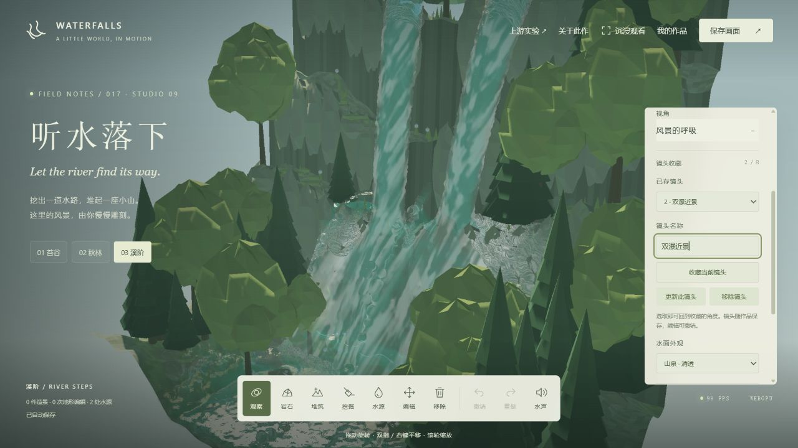

地形塑造
增加、切削、恢复、平滑与压平地形；支持镜像笔刷和撤销。可构建溪阶、河道、山谷与洞穴形态。
01 / 先看它能做什么
塑造地形，放置岩石，让水从不同源头流出。水会随场景变化绕行、分流与汇合——你可以一边搭建，一边观察结果。
以下为本项目 STUDIO 09 的真实浏览器输出。截图展示某一时刻；实时流动与编辑请进入工作室体验。

公开入口 / 体验 · 下载 · 源码 · 来源
本页文字和图像无需 WebGPU。互动工作室与 EA 示例需要支持 WebGPU 的浏览器；汇总图沿用已生成的完整理解图。
雕刻地形、编辑对象和水源，观察水路变化，保存作品与画面。
技术参考 · 保留原版示例运行 EA 二维示例直接体验上游 PB-MPM。原版多材料能力与本项目的三维水景分别展示。

一张图看效果、能力、原理、产品方向、价值和边界。
保留文字、布局与原始实机截图，便于后续说明与演示。
来源 · 归属 · 第三方许可查看来源与许可原作、EA、Breakpoint 与本项目各自贡献什么，以及保留的许可全文。
本项目 · GitHub 017 目录查看源码与研究记录完整源码、基础归档、模块说明、测试和业务扩展理解均在项目目录。
先导入一个可编辑作品，再按需要复用冻结的源码与检查。示例 JSON 保存设计状态，导入后水流重新运行。
从本机迁移到公网：在原工作室“我的作品”导出 JSON，再到公网工作室导入。本机与公网存储互不迁移；Pages 不提供云同步。
02 / 我们沉淀的是什么
当前交付是一套能独立使用的三维水景工作室，以及可以继续复用的内部模块。它把“场景编辑 → 水流反馈 → 视觉展示 → 作品保存”连成一个完整循环。
现阶段的价值，是保留已经验证的技术基础。以后出现明确业务，再选择需要的能力，补业务规则和接入层，在目标设备上验收；不必为每个想法重新实现流体和编辑器。
场景由你搭建，水流由模拟产生。它适合小范围自然场景与交互体验；工程水动力、通用游戏地图和完整商业平台需要各自的新增能力。
03 / STUDIO 09 已经具备
下列能力已存在于当前版本。后面的业务方向是可扩展路径，不代表这些产品已经交付。
增加、切削、恢复、平滑与压平地形；支持镜像笔刷和撤销。可构建溪阶、河道、山谷与洞穴形态。
放置岩石等内置对象，选择、复制、移动、缩放、旋转与镜像；支持多选和组合变换，实时更新障碍碰撞。
独立设置水源位置、方向、速度、半径和强度；开关水源、预览喷射轨迹，并观察水流绕行、分流和汇合。
程序生成的山谷、植被和岩石，配合天空、雾、光照与水面透明、折射、反射和不规则泡沫，形成可观看的水景。
环绕、缩放、聚焦和预设视角；最多 8 个命名镜头收藏。沉浸观看可隐藏编辑界面，返回按钮或 Esc 退出。
本地自动保存、作品库、JSON v2 导入导出和 PNG 输出。JSON 保存地形、对象、水源、参数与镜头等设计状态，加载后重新运行模拟。

04 / 内部如何工作
地形网格负责画出环境；水面则从粒子在屏幕上的深度与厚度重建。两条渲染路径在最后画面中汇合。
笔刷、对象变换、水源和参数修改形成场景状态；历史记录支持撤销与重做。
JavaScript · 编辑状态体素标量场描述地形与障碍，合成距离近似碰撞场供模拟读取。Worker 用 marching tetrahedra 提取地形网格。
CPU / Worker · 碰撞 + 地形网格先处理粒子重力与出水，再把质量与动量传到背景网格；结合网格碰撞和粒子体积约束迭代，往返更新运动。
WebGPU compute · PB-MPM / APIC投影粒子并累积深度、厚度，平滑表面后估算法线；叠加吸收、折射、反射和泡沫，与环境合成。
WGSL · 屏幕空间流体镜头控制决定如何观看；PNG 保存画面，JSON 保存可再次编辑的设计。继续编辑进入下一轮反馈。
镜头 · 输出 · 作品状态粒子跟随水移动，适合表示流动中的材料；固定背景网格为邻域计算与约束迭代提供结构。PB-MPM 在两者之间往返传递运动，再通过局部迭代约束调整材料行为。
本项目使用固定时间步 1/120 s、每步 3 次迭代。有限迭代的效果受参数与收敛情况影响，不能把论文中的稳定性讨论等同于任何配置和设备都稳定。
地形和静态对象共同形成碰撞场，GPU 在运动更新时读取它。修改障碍会改变可流动区域，水便随碰撞关系重新分布；喷射轨迹预览也跟随碰撞版本刷新。
地形生成放到 Worker，碰撞场与对象网格使用缓存更新，避免每次编辑都重建全部环境。Three.js 负责相机、数学与交互控制，流体计算和渲染使用自定义 WebGPU 流程。
| 来源 | 提供的理解 | 与本项目的关系 |
|---|---|---|
| Mogmek · Waterfalls Dream | 造景与流体交互的体验灵感。 | 原始 X 演示是灵感来源。未据此确认它的内部算法、源码或可用库；本页不代表该作品的官方说明。 |
| EA SEED · PB-MPM | 公开二维 WebGPU、多材料 PB-MPM 模型参考。 | 参考粒子与网格传递、局部约束迭代思路。上游的多材料能力不等于本项目已经提供多材料编辑。 |
| Breakpoint | 三维 DirectX 12 GPU PB-MPM、双层网格与 mesh shaders 流体表面。 | 三维技术路径的参考。本项目的水面使用屏幕空间重建，没有采用其水面 mesh shading。 |
| Waterfalls Lab · STUDIO 09 | 独立的浏览器三维水景实现。 | 自有地形、对象、水源、GPU 模拟、屏幕空间水面、作品与镜头编辑模块；不能把几项参考项目视为同一个库。 |
05 / 同一基础，六类业务
这里是后续业务匹配索引，不是新增功能清单。相对复杂度只是技术估计，不代表工期或收益预测。
让创作者构建、保存并比较小范围自然场景。
让访客观看风景，并通过有限操作改变它。
让玩家通过调整地形、障碍和水源，达成关卡目标。
让学习者操作参数与场景，观察并解释结果变化。
把可编辑场景转为符合实际用途的视觉素材。
让用户创建、管理、发布并浏览造景作品。
06 / 对你的价值
流体、编辑、渲染和存档已经串联，后续可直接从真实可操作场景验证业务，而非从静态概念重新搭建。
展示页只开放镜头和少量互动；创作工具开放完整编辑；解谜产品加入目标判定。相同能力可服务不同任务。
PNG 用于沟通效果，JSON 保留设计。场景、参数和镜头可以积累为样例与模板，继续服务方案迭代。
已有边界、代码模块与验证记录便于判断复用成本。以后按业务补接口、素材或服务，避免无目标地扩展。
当前阶段可以停止无目标探索。沉淀 STUDIO 09 基线；业务出现后，再决定扩什么、为何扩，以及如何验收。
07 / 从基础到可用产品
以下是仓库中的内部模块，接入业务时需要封装生命周期与业务接口；页面中的路径用于定位源码。
| 选用能力 | 源码入口 | 业务接入重点 |
|---|---|---|
| 流体与渲染 | src/gpu.js · WaterfallEnginesrc/shaders.js | 宿主画布、挂载 / 卸载、资源释放、WebGPU 能力与性能预算。 |
| 地形与碰撞 | src/voxel.jssrc/terrain-worker.js | 领域素材、尺度与编辑范围；扩大域需要同步修改求解器和校验。 |
| 对象与编辑 | src/object-editor.jssrc/object-mesh.js / src/stroke.js | 业务实体、操作权限、工具界面和编辑事件。 |
| 水源与轨迹 | src/sources.jssrc/jet.js | 水源规则与交互方式；轨迹预览估算空中运动，实际水流以模拟为准。 |
| 作品与历史 | src/project.jsencodeProject / decodeProject | 业务存储、版本迁移与实体关联。解码只保留已定义字段，导入会重建对象 ID。 |
| 镜头与画面 | src/camera-views.js引擎相机与 PNG 方法 | 展示编排、输出规格；视频与批量流程按需求新增。 |
目标用户是谁？要完成什么任务？交付独立页面、嵌入组件还是平台？
从地形、流体、渲染、编辑、存档和镜头中组合需要的能力。
按交付形态封装初始化、更新、事件和销毁；再补规则、内容、账号或服务。
明确加载时间、帧率、编辑反馈、存档与异常恢复要求，使用真实目标设备测试。
52 × 56 × 44，单元尺度 DX = 0.24；扩大范围与提高精度会改变计算和内存成本。的 STUDIO 09 基线记录：91 项自动检查通过；本机真实 GPU 检查中，49,152 个活动粒子全部为有限值、位于模拟范围内，明显进入固体的粒子为 0。
同轮实测还覆盖对象组合移动、地形 Worker 编辑与撤销、作品导入导出、PNG 输出、镜头收藏和沉浸观看；390 × 844 为桌面浏览器窄屏视口检查。
这些是既有基线的历史验证，不是本说明页新增模拟测试，也不等于所有硬件、实体手机或长时运行都已验收。具体业务仍需在目标设备上验证。
查看项目来源说明08 / 一张图，带走完整理解
汇总图与上文配套：从真实水景出发，向下理解技术，向外匹配业务，最后落到复用与验收。
参考与说明
体验灵感链接；本轮来源核对未能读取该页面，不据此追加内部实现、源码披露或发行状态结论。
二维 WebGPU 与多材料参考。另见 官方技术介绍和 SIGGRAPH 2024 论文。
DirectX 12、双层网格与 mesh shaders 流体表面；用于区分三维参考方案与本项目的屏幕空间水面实现。
本页以 STUDIO 09 代码与历史验证为能力基线；产品方向属于后续业务扩展索引。